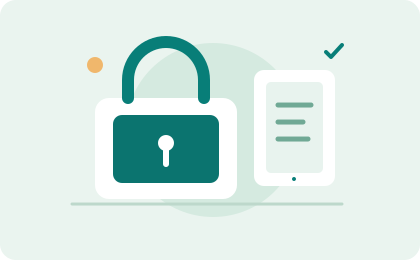
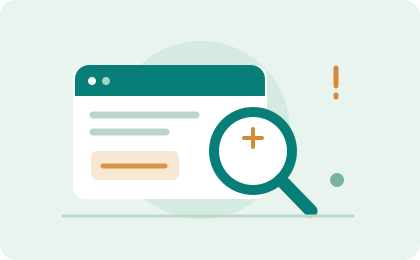
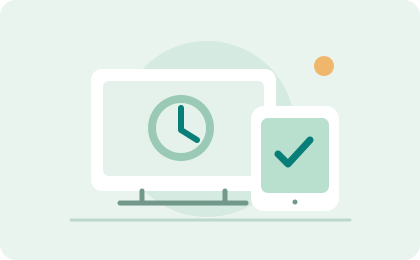
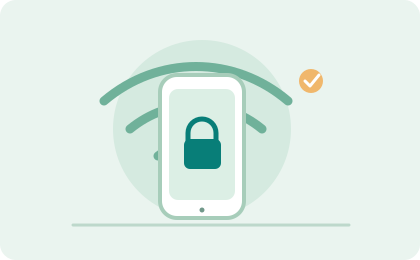
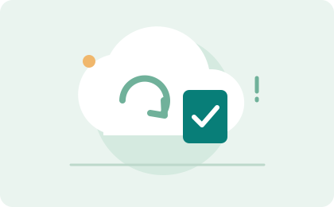

01 / ACCÈS
Un mot de passe, une seule porte
Réutiliser le même mot de passe, c’est comme confier toutes ses clés à une seule serrure. Un gestionnaire vous aide à en créer et retenir des différents.
Mieux protéger mes comptesLE NUMÉRIQUE, EN TOUTE CONFIANCE
Pas besoin d’être expert pour mieux se protéger. On vous aide à comprendre les risques du quotidien et à adopter des réflexes qui font vraiment la différence.
Découvrir les bons réflexesLES PETITS GESTES QUI COMPTENT
Quelques habitudes faciles à prendre peuvent éviter bien des mauvaises surprises.

01 / ACCÈS
Réutiliser le même mot de passe, c’est comme confier toutes ses clés à une seule serrure. Un gestionnaire vous aide à en créer et retenir des différents.
Mieux protéger mes comptes
02 / MESSAGES
Un message pressant n’est pas forcément urgent. Vérifiez l’adresse de l’expéditeur et contactez l’organisme par un canal connu si quelque chose vous semble étrange.
Repérer une tentative d’arnaque
03 / APPAREILS
On a tous déjà repoussé ce rappel. Pourtant, les mises à jour corrigent souvent des failles : activez-les automatiquement et gardez vos appareils à jour.
Faire le point sur mes appareils
04 / CONNEXIONS
Au café ou à l’aéroport, évitez les opérations sensibles sur un réseau ouvert. Si vous devez vous connecter, privilégiez vos données mobiles et vérifiez le nom du réseau.
Naviguer plus sereinementRESTER CURIEUX, PAS INQUIET
Hameçonnage, faux concours, usurpation d’identité : les pièges jouent souvent sur la confiance et la précipitation. Apprenez à les reconnaître, puis prenez le temps de vérifier.
Comprendre les menacesUN PEU DE CONTEXTE, BEAUCOUP DE CLARTÉ
Comprendre les bases aide à faire de meilleurs choix — pour soi et pour les gens qu’on aime.
À SAVOIR
Un faux message essaie de vous faire révéler un code ou vos coordonnées. Les détails comptent : adresse web, ton inhabituel et demande inattendue méritent un coup d’œil.
En parler simplement
À PRÉVOIR
Une copie de vos photos et documents importants peut tout changer après une panne ou une perte. Automatisez-la et vérifiez de temps en temps que vous pouvez restaurer vos fichiers.
Préparer mes sauvegardesÀ VÉRIFIER
Les réglages de confidentialité évoluent. Prenez un moment pour revoir qui voit vos publications, quelles applis accèdent à vos données et ce que vous souhaitez vraiment partager.
Revoir mes paramètresÀ RETENIR
Les codes de vérification servent à confirmer que c’est bien vous. Même une personne qui semble venir de votre banque ou de votre famille ne devrait jamais vous les demander.
Sécuriser mes connexionsON APPREND MIEUX ENSEMBLE
Personne n’est à l’abri d’un message trompeur, et il n’y a pas de honte à poser une question. Partager ses expériences aide toute la famille à naviguer plus tranquillement.
Découvrir notre approcheRestons en contact :